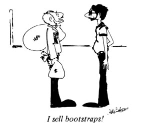

If you now operateor have ever operateda successful home business that was inspired by an article you read in MOTHER, tell us (in 500 words or less) when and whereand with how much seed moneyyou started your venture. Because if your story can be fitted into an upcoming installment of BOOTSTRAP BUSINESESSES, youll receive [1] the warm satisfaction of knowing that you helped someone else find the happiness you enjoy and [2] a free two-year new or renewal subscription to THE Mother Earth News .
My wife Loretta and I recently got a push toward self-sufficiency... when we read " 'Landlord' Doesn't Have to Be a Dirty Word" in MOTHER NO. 47, page 98.
We'd been renting a converted barnlocated in the Catskill region of New York statefrom absentee owners who were based in New York City. Andsince the proprietors weren't in a position to maintain the property themselvesLoretta and I had been working as unofficial maintenance people for our landlords' Catskill farmhouse, apartment, and barn. We were in the process of buying our first home at the time and were, therefore, in desperate need of an extra source of income. MOTHER, of course, came through for us: Her article on landlording gave us the confidence we needed to propose that the proprietors of the property we were living on hire us to manage their buildings... andlo and beholdour offer was accepted and we were in business!
The total initial investment in our enterprise was $100... the amount of our lawyer's fee to draw up the lease which rented us all three of the Catskill structures on 50 acres of land. My wife and Iin turnsublet the buildings and became responsible for maintaining all the property. Before long, we'd moved out of our converted barn apartment in order to sublease it, too... because our little sideline business was netting us enough monthly cash profit to make the mortgage payments on our new home!
Loretta and I have had such success with our first attempt at landlording that we're currently looking for additional property to manage. There are lots of city dwellers who own country homes and cottages, but have neither the time nor the inclination to take proper care of their holdings. The land and the buildings are out there waiting... for MOTHER-type do-it-yourselfers to step right in and take 'em over!
Dan Dooling WestShokan, N.Y.
I'm a 36-year-old family man who was raised in the "old school" of new cars, fancy houses, and the nine-to-five grind. But (like most folks) although I enjoyed the luxuries that money could buy, the workday drudgery eventually got me down. Then one day I was introduced to THE Mother Earth News (and to a whole new way of life). As a result, I was prompted not only to quit my backbreaking and ungratifying employment in a slaughterhouse, but also to establish a succession of bootstrap businesses.
Above all (and as far back as I can remember), my aim was to be a cartoonist... but every book or article I'd ever read on the subject had spent so much time preparing the reader for rejection that I was left with the sinking feeling that I didn't have a chance. Finally, however, I came across two articles in THE Mother Earth News Handbook of Home Business Ideas and Plans"How to Be a Cartoonist" by MOTHER'S editor/publisher John Shuttleworth and "The Lonely Worker" by Karl Kohlerwhich had just the upbeat, inspirational attitude I needed to get me moving. Now don't get me wrong... I knew it would be tough to break into cartooning, but I figuredand rightly sothat there were enough other sure-fire homebased enterprises available to keep me going while I got established.
First, I thought, my family and I would need an inexpensive place to live... and since I'd read "Getting Paid for Living Good" (MOTHER NO. 15, page 25), I knew just how to seek out the rent-free situation we were looking for. It was a matter of simply "asking around" until someone offered us the trade we sought: the use of a nice two-bedroom home on 160 acres of land, free firewood, gardening and hunting privileges, and enough seclusion in which to cartoon to my heart's content... all in exchange for overseeing the property.
Next we needed a quick way to earn some cash... and puppeteering ("Profit From Puppets", MOTHER NO. 57, page 97) turned out to be the perfect answer. I scrounged up a variety of scrap materials from around the house and created several puppet characters and a portable stage. Then I arranged for my debut (a sort of practice run performance at our local hospital)... word of mouth proceeded to land me my first salaried position (at the neighborhood library)... and now I have all the outside bookings I care to handle.
I started puppeteering with a fee rate of only $10 per 20-minute show... but I'm now paid in excess of $100 for each performance and have been earning more than $750 a month! Like any enterprise, however, my business has its slow periods... and when that's the case, my family and I set out toward our own private woodlandon the property we caretaketo pick and peddle a variety of plants, just as MOTHER taught us in "You Can Make Money Harvesting and Selling Botanicals" (Issue No. 47, page 148).
Meanwhile, I've been spending my every free minute cartooning (initial investment: $6.00 for paper, stamps, and manila envelopes)... and mailing off copies of my creations to publications all over the nation. And, finally, all the hard work and waiting have begun to pay off: Two of my cartoons will be featured in an upcoming issue of Eastern/Western Treasures magazine... six appeared in the May 1979 issue of Wilderness Camping magazine... and the latter feature has recently been scheduled to run as a regular column!
So my advice to all you potential bootstrap businesspeople out there is this: Don't give up whatever it is that you're after. With a little bit of guts and some help from MOTHER, I'm willing to bet that YOU CAN DO IT!
Gerry R. Osborne Kelso, Wash.
My family is made up of devoted readers of THE Mother Earth News and, as such, we've been helped financially by many MOTHER features. We were particularly taken with the Greenhouse IssueNo. 42since we're in the garden and flower shop business and have several greenhouses of our own. The articles in that particular volume provided us with numerous tips on how to produce the most profit from a small space... including valuable advice on heating with wood and with the sun. But the pointers on plant-growing accessoriesterrariums, hanging plants, and the liketurned out to be one "pot of gold at the end of the rainbow"... because from that information grew our idea to revive the age-old art of topiary design: training and trimming plants into ornamental shapes.
The secret of the craft lies in constructing the forms (later packed with a growing medium) which help mold the greenery as it develops. We made our first 30 sphagnum-filled shapes with a total initial investment of $25. The forms were constructed of poultry netting, rabbit or gutter wire, or small-net fencing... and ivy was planted inside each one. The final touch consisted of hanging the structures on small chains or securing them to a flowerpot or a piece of driftwood. (Though we learned topiary art through trial and error, that needn't be the case for other folks. Becauseas a result of our struggle we've put together an instruction booklet... which is available from our home address for $2.50 plus 50 shipping and handling.)
Our greenhouse business alone has kept us pretty busy, so we've had little time to devote to our new endeavor... however, all indications to date have convinced us that the topiary enterprise has quite a large profit potential. It may be true that "there's nothing new under the sun"... but we've discovered that there are a lot of valuable old ideas that have yet to be revitalized!
Mary Jo Dowling P.O. Box 786 Seymour, Ind. 47274
I'm convinced that anyone who reads MOTHER can profit from her numerous moneymaking ideas: I reaped my benefits when I read "How to Go to Work for Yourself" in Issue No. 52, page 36... because that piece was just the push I needed to search out a home-based enterprise of my own.
It didn't take me long to stumble upon the perfect business opportunity: a trailer-load of scrap lumberpaneling, 2 X 4's, and the like which was left over from a housing project and free for the taking. I hauled off the windfall and set about turning the wood scraps into salable merchandise. My first handicrafts included toy chests, bird feeders, and corner shelves... and after one weekend garage sale, every last item was sold!
Thenin an effort to help expand my new enterpriseI invested a portion of those first earnings. Six dollars bought me three discarded washing machine motors... all that I neededin addition to my scrap lumberto put together a drill press, a jigsaw, and a disc sander. Another $3.00 purchased an ad in a local shopping guide, which brought in calls from several trash haulers who offered more free wood than my small work area could hold. (In fact, I was left with enough surplus timber to heat both my house and my workshop/garage... the latter of which is equipped with a barrel stove, constructed years ago from plans in MOTHER NO. 22, page 70.)
These days, I sell my handicraftsas well as copies of my power toolsat local flea markets (and I mail drawings that explain the construction of my woodworking appliances in return for $2.00 and a self-addressed, stamped envelope). I calculate that my business expenses total about $13 per week... and I average approximately $100 in earnings in that time. But my enterprise is not merely a source of income for me: As a 68-year-old retiree, I've come to value my new endeavor as a method of meeting new people and making friends, as well... and more important stillfor the first time in my life I'm finding that work and recreation can be one and the same!
George Carlson Box 74 Laingsburg, Mich. 48848
|
|
 |
|